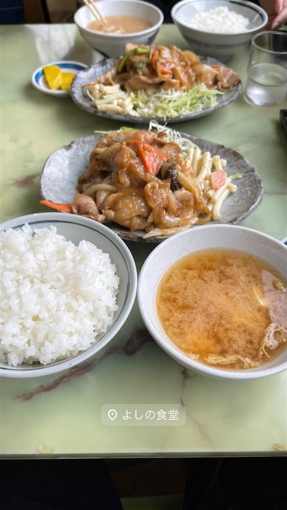

和食・定食 · 定食・食堂 · 橋本
よしの食堂
1966年創業、壁一面50種類超のメニューが並ぶ孤独のグルメのロケ地
よしの食堂
橋本駅近くにある1966年創業の老舗大衆食堂。壁一面に貼られた50種類以上のメニューが名物で、テレビドラマ「孤独のグルメ」にも登場した。生姜焼き定食など昔ながらの定食が地元で長く愛されている。
TRIVIA
豆知識
- 「孤独のグルメ」シーズン10第1話（2022年）のロケ地になった
- 壁一面に貼られたメニューは50種類以上
- 橋本エリアで50年以上続く飲食店は数少なく、その一つ
REVIEWS
世間の評判
3.49食べログ
昭和レトロな人気食堂の混雑
- スタミナ炒めや鶏ネギ塩など定番メニューの味を評価する声が多い
- 昼どきに訪れると8割ほどの席が埋まっているほど混雑するという声が多い
- メディアで話題になった分、期待していたほどではなかったと感じる声もある
食べログ 口コミ442件
| 創業 | 1966年創業（一部情報では1967年創業とも） |
|---|---|
| 看板 | 生姜焼き定食、牛肉のスタミナ炒め、ねぎ玉 |
| 掲載・評価 | テレビドラマ「孤独のグルメ」シーズン10第1話（2022年10月放送）のロケ地。 |
| どこから | 東京から1時間ほど |
| 営業時間 | 月 休み 火 11:00-13:30 水〜日 11:00-13:30、17:00-19:30 |
| 予算 | 昼 ～¥999 夜 ～¥999 |
| 定休日 | 月・火 |
| 場所 | 橋本 神奈川県相模原市緑区橋本 |
| メモ | テーブル席・座敷席あり。壁一面にメニューが貼られ、その数は50種類以上。 |
食べたもの：生姜焼き定食